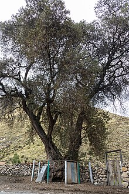

La flora del distrito de Sapallanga se caracteriza por ser muy rica y variada, la vegetación se alterna con una gran variedad de cactus columnares, que son permanentes y caracterizan a la provincia; las lluvias alimentan el desarrollo de la vegetación herbácea o pastos naturales. Entre las plantas cultivadas se tiene: papa, cebada, maíz, trigo, habas, alverja y en pequeña escala alfalfa. Como plantas exóticas y árboles maderables se tienen al eucalipto y el cipré.
La imagen anterior representa una planta de cipre.